Luxury Listing Strategy, Positioning & Pricing
Prepared by Chris Gorman
For a property like 3300 Darien Dr, the objective is not simply to determine what the home is worth in a vacuum. The objective is to introduce it to the market in a way that reflects its quality, rarity, and place within Raleigh’s luxury landscape.
Darien should not be grouped with generic older inventory. It belongs in the conversation with high-character, highly livable luxury homes that offer architectural identity, entertaining quality, and real lifestyle value.
An elegant, high-character home that combines architectural warmth, meaningful upgrades, and a lifestyle that feels both refined and deeply livable.
Multiple HVAC replacements, tankless water heater, water leak detection and other stewardship-oriented improvements reinforce confidence in the home’s condition and care.
Office and bath renovation, stair and hardwood improvements, third-floor flex/gym finish work, smart lighting, audio, security, and landscape lighting all strengthen buyer perception.
Darien’s edge is not just square footage. It is the combination of entertaining warmth, architectural personality, family livability, privacy, and a school-location story buyers immediately understand.
Used to establish where the market has recently rewarded similar homes.
Used to understand what current buyers are accepting right now.
Used to understand what Darien must stand against in the buyer’s mind.
In this segment, no single comp gives the answer. The strategy comes from the pattern created by the solds, the pendings, and the active competitive set.
The solds establish where the market has recently rewarded similar quality, scale, and buyer appeal. They do not create a single answer, but together they frame the supportable range.
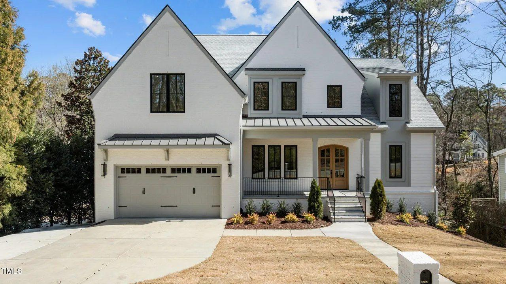
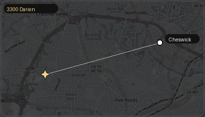
Role: Quality benchmark
Why it matters: Similar scale with strong renovated/custom feel, useful for supporting Darien’s premium quality positioning.
Why Darien may compete well: Better lifestyle story, entertaining warmth, and a more emotionally distinctive character profile.
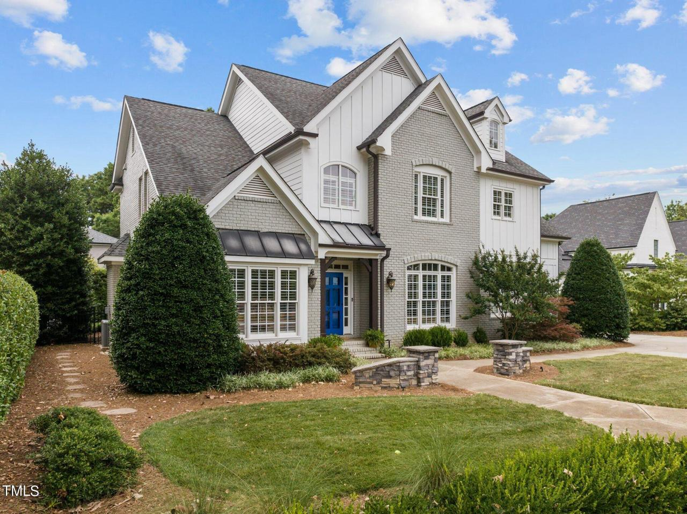
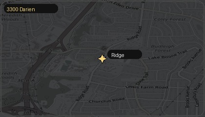
Role: Same-area support comp
Why it matters: Reinforces what buyers are willing to pay in the same broader Ridge/Darien/27607 orbit.
Important note: Smaller than Darien, so best used to support local pricing strength rather than as a direct size anchor. Additional context: This appears to have been an off-market sale, which means it may not have fully tested open-market demand or achieved full market value.
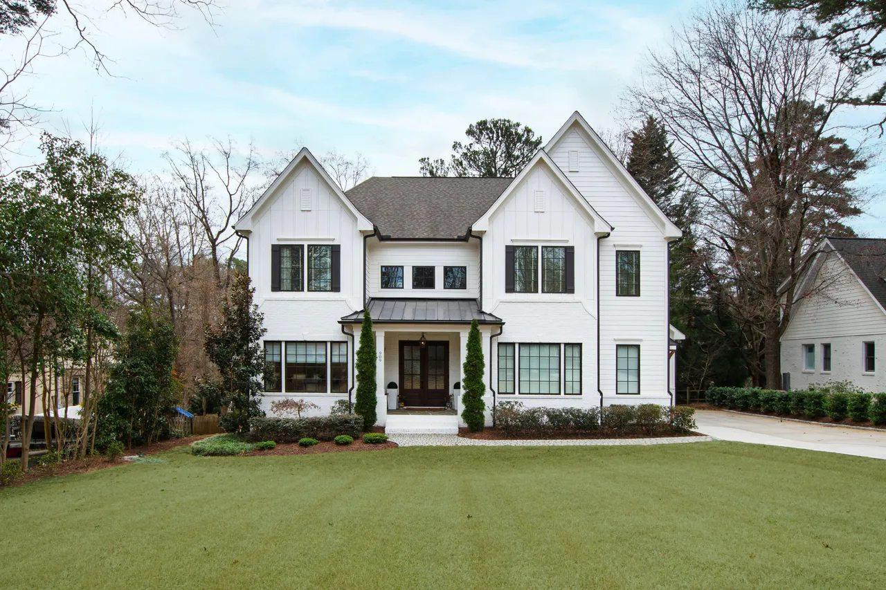
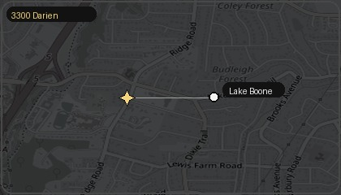
Role: School-pattern support comp
Why it matters: Important support for the same broad Lacy/Martin/Broughton buyer pool.
Darien advantage: Darien is not located on a busier road, which matters to buyer perception and livability.
Pending and active homes are especially important because they show the range of what buyers are considering in real time.
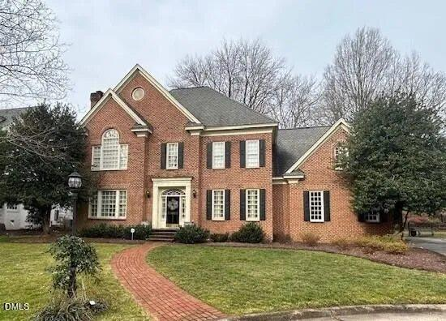
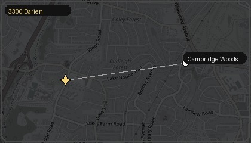
Role: Immediate pending benchmark
Why it matters: Same broad school/lifestyle conversation and immediate pending response at $1.9M.
What it tells us: Well-positioned established luxury homes can still move quickly when buyers see quality and value alignment.
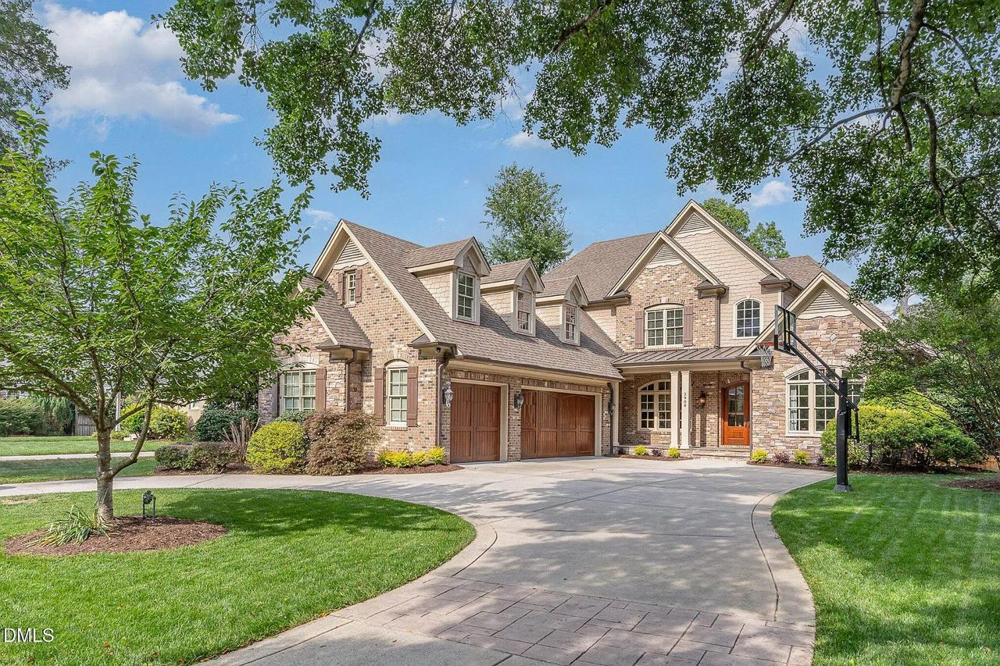
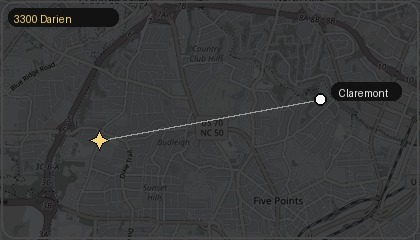
Role: Upper-end established-home benchmark
Why it matters: Large, highly amenitized pending property that shows what the market may tolerate at the top end for established luxury product.
What it tells us: Premium pricing is possible, but the home must be positioned convincingly and may require more patience.
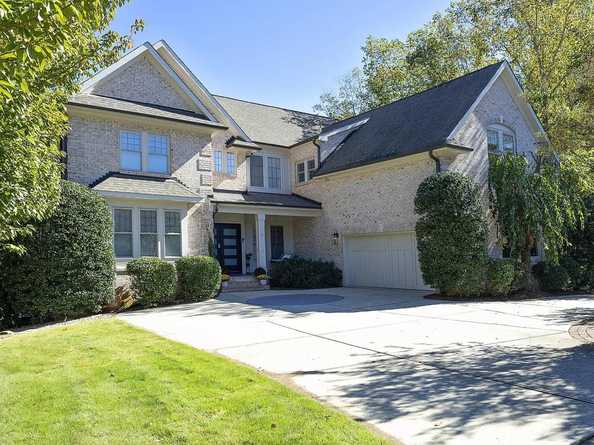
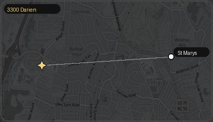
Role: Upper-tier competitive context
Why it matters: Amenity-rich, high-profile luxury alternative in the same broad buyer pool.
What it tells us: Darien does not need to out-amenity these homes. It needs to out-position them on character, warmth, livability, and elegance.
| Property | Status | Price | PPSQFT | Size | Beds | Baths | Year | Takeaway |
|---|---|---|---|---|---|---|---|---|
| 3300 Darien Dr | Subject | TBD | TBD | 5,303 SF + finished flex | 5 | 4F / 2H | 2008 | French-inspired, highly improved, strong entertaining and school/lifestyle appeal |
| 3304 Cheswick Dr | Sold | $1.85M | $348/SF | 5,316 SF | 6 | 5F / 1H | 2015 / 2024 remodel | Quality benchmark for premium established luxury stock |
| 1829 Ridge Rd | Sold | $1.52M | ~$324/SF | ~4,692 SF | 4 | 4F / 1H | 2005 | Strong same-area support, though smaller than subject |
| 909 Lake Boone Trail | Sold | ~$1.97M | ~$372/SF | 5,300 SF | 4 | 4F / 3H | 2020 | Important school-pattern support; subject has road/location advantage |
| 308 Cambridge Woods | Pending | $1.90M | $379/SF | 5,013 SF | 4 | 4F / 1H | 1989 | Immediate pending benchmark; strong current-market signal |
| 2908 Claremont Rd | Pending | $2.495M | $424/SF | 5,884 SF | 5 | 4F / 0H | 2011 | Upper-end established-home benchmark with more amenities and larger lot |
| 2608 St Marys St | Pending | $2.675M | $414/SF | 6,463 SF total | 5 | 4F / 1H | 2006 | Amenity-rich upper-tier context, not a tight apples-to-apples comp |
Takeaway: the solds support meaningful value, while the pendings and active luxury set justify a premium conversation if the home is presented at a high level.
| Strategy | Range | Primary support | Expected market response |
|---|---|---|---|
| Competition-Driven | $1.89M–$1.95M | Lower/mid established-home band plus urgency-based positioning | Most likely to generate immediate traffic and competitive momentum |
| Market-Aligned | $1.96M–$2.05M | Strongest balance of sold support and pending market evidence | Most defensible balance of credibility, activity, and value protection |
| Premium Positioning | $2.051M–$2.15M | Supported by stronger pending/active luxury context and Darien’s premium story | Best for negotiation room and upper-tier positioning, but requires more patience and flawless execution |
Each pricing path can work. The right choice depends on whether the priority is maximizing early momentum, balancing market support with value protection, or launching with a premium posture and greater negotiation room.
Designed to create urgency, traffic, and competitive energy.
Designed to balance supportability, value, and strong buyer engagement.
Designed to introduce the home at the upper end of its supportable range and preserve negotiation room.
This strategy leans on the reality that well-positioned homes can create immediate urgency when they feel compelling relative to both sold support and active competition.
This approach draws its strength from the lower and middle established-home band and is most effective when the priority is pace, showings, and the possibility of competitive pressure.
This strategy is the cleanest balance between what the sold support suggests and what the current pending market implies.
This is the most supportable range if the objective is a strong combination of credibility, buyer engagement, and value protection without overreaching.
This strategy is a positioning decision designed to present Darien at the upper end of its supportable range and preserve meaningful negotiation room.
This range is supported more by the stronger pending/active context and the home’s premium presentation story than by conservative sold averaging alone. It is strongest when paired with excellent execution.
The goal is not to force a single number. The goal is to choose the strategy that best matches how you want to position the home, how much negotiating room you want to preserve, and how aggressively you want to pursue early buyer momentum.
Each pricing path can work. The right choice depends on whether the priority is premium positioning, a balanced market strategy, or immediate competitive activity.
Darien should be marketed as elegant, architectural, entertaining-forward, highly improved, and deeply livable — not as just another large house in a luxury price band.
High-touch communication, vendor coordination, strategic prep guidance, and calm decision support from launch through negotiation.
Luxury sellers are not only hiring marketing. They are hiring confidence, judgment, and a process that feels controlled and elevated.
3300 Darien Dr has the quality, character, and positioning to justify a premium market conversation. The final decision is not only about value — it is about choosing the strategy that best reflects the home and your goals.